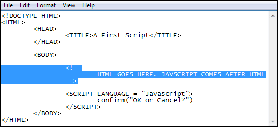
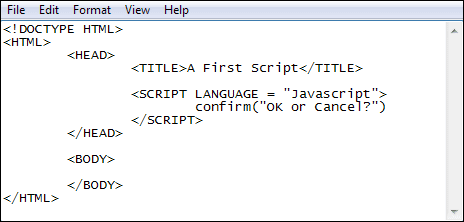
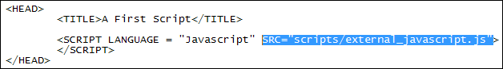
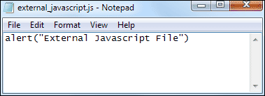

Javascript Tag Placement
In Javascript, SCRIPT tags can be inserted into three places: in between the two BODY tags, in between the two HEAD tags, and as a link to an external file, also in the HEAD section.
Some advocate putting the SCRIPT tags in the BODY section, right at the end. Like this:

The reason to do it this way is because the web page itself will have loaded before the script is read. If it's in the HEAD section, the script will be parsed before any HTML or CSS elements are loaded. If your Javascript references any of the web page's elements, there may be a slight delay in the fancy effects you want to apply, or it may just not work at all.
For the most part, though, we'll place our script tags in the HEAD section of the HTML. Like this:

Exercise
Using your code from the previous lesson, move
your Javascript code from the BODY to the HEAD section of your HTML, so that
it looks like ours above. Change the confirm box back to an alert message.
External Javascript Files
Javascript code can also be placed in an external file. Your SCRIPT tags then include a SRC attribute that points to the location of your Javascript file. Here's the HTML:

In the code above, we have added the following attribute to the opening SCRIPT tag:
SRC="scripts/external_javascript.js"
SRC stands for Source. After an equal sign, you type the path to your Javascript file. We created a folder called scripts. Inside of this folder we placed a file called external_javascript.js.
Note the new extension - js. When saving code in an external file, end the file name with the two letter extension js.
The file itself is this:

All we have here is the alert box line. Notice that we don't need any SCRIPT tags in the external file. That's because they are already included in the HTML code. When the browser parsers the HTML it sees the SRC attribute and then includes all your Javascript at that point.
When your code gets too long and unwieldy, placing it in an external file helps you to control it more. Plus, if you need to make changes to the Javascript you'll only need to amend one file, instead of making changes to the HEAD section of lots of HTML files.
Exercise
Move your alert message to an external file. Make sure you get the file referencing
part right after the SRC attribute, otherwise your code won't run properly.
In the next lesson, we'll take a look at the Browser Object Model.